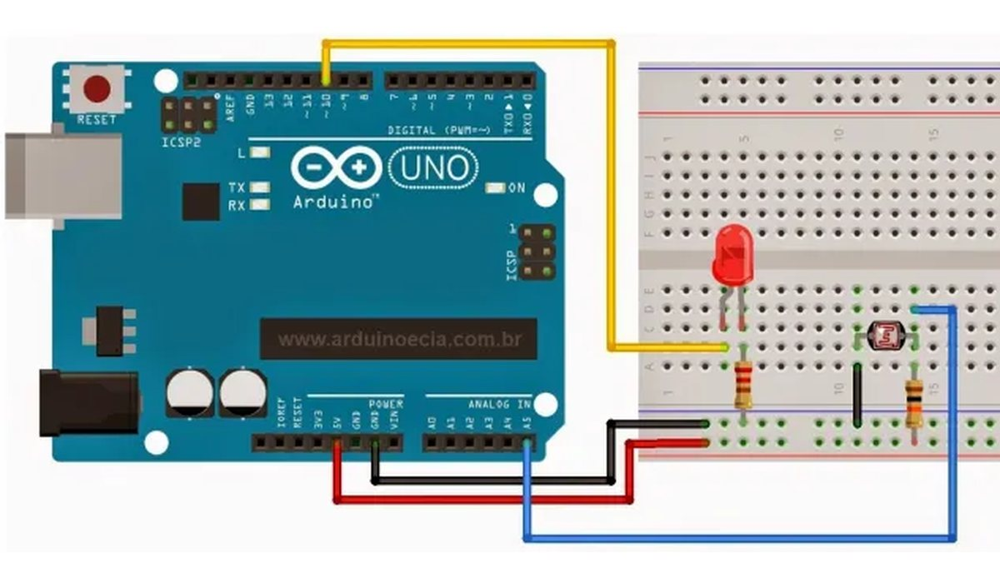
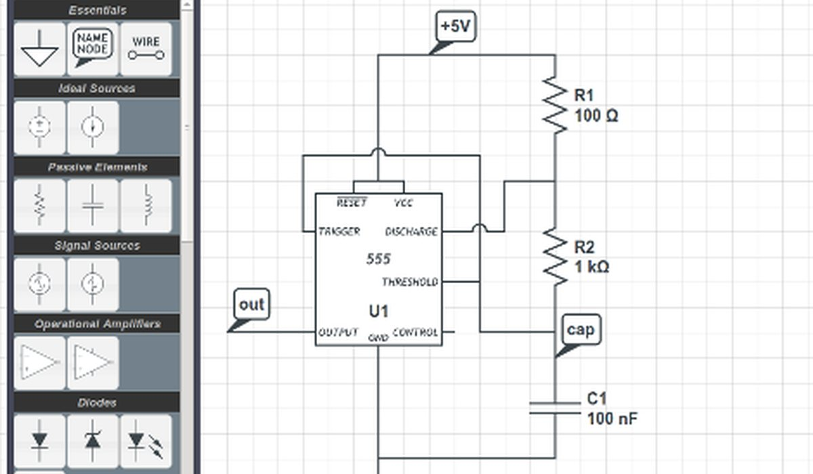

Basic Circuit & Electronics Experiments
BreadboardOscilloscopeOp-Amps
Studying series and parallel circuits, operational amplifiers and passive filters, and observing voltage and current behaviour on breadboards and oscilloscopes.
Ideas into action
A space for academic work, lab experiments, simulation projects and web development.
Areas I am exploring through my EEE studies at Jamalpur Science & Technology University.
Studying series and parallel circuits, operational amplifiers and passive filters, and observing voltage and current behaviour on breadboards and oscilloscopes.

Interfacing sensors, LEDs and actuators with Arduino microcontrollers using C/C++ for real-world automated control.

Documenting laboratory experiments and circuit simulations, and presenting engineering concepts clearly through structured reports.

This responsive multi-page portfolio, built with HTML, CSS and JavaScript, with dark and light modes and mobile navigation.
LET’S CONNECT
I’m always happy to talk about engineering, learning and collaboration.
Contact me ↗